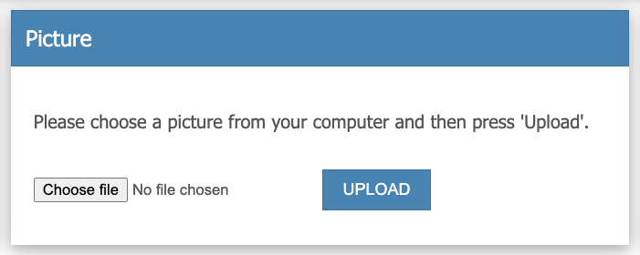

Trongate is loaded with a variety of features that can assist with the uploading of files such as images. Before exploring Trongate's file validation helper, let's have a reminder of how to draw a file uploader form using Trongate:
echo form_open_upload("members/submit_upload_picture/".$update_id);
validation_errors();
echo "Please choose a picture from your computer and then press \"Upload\".";
echo form_file_select("picture");
echo form_submit("submit", "Upload");
echo form_close();
The code above could be used to produce a form that looks like this:

The uploader form, above, starts by invoking the form_open_upload() method.
echo form_open_upload("members/submit_upload_picture/".$update_id);
As can see, an argument has been passed into the method. The argument represents the destination for the uploader form. The destination is the URL where the user is sent to when the form is submitted. The opening line produces the following HTML code:
[lt]form action="http://localhost/your_app/members/submit_upload_picture/1" method="post" enctype="multipart/form-data"[gt]
Next, we invoked Trongate's validation_errors() method.
validation_errors();The validation errors method displays form validation errors, if there are any.
After displaying some text based instructions, the next important part of our form is:
echo form_file_select("picture");The form_file_select method displays a form file uploader field. As you can see, the argument 'picture' has been passed into the method. The 'picture' argument represents the name of the file uploader form field. The HTML code that gets generated from our form_file_select method is shown below:
[lt]input type="file" name="picture" value=""[gt]
What these three attributes represent and how they behave is identical to how ordinary form_input() methods work. See The Form Helper Documentation for details.
Finally, we end our uploader form by displaying a submit button and by drawing a closing 'form' tag. Here, our 'submit' button has the name 'submit' but the word 'Upload' appearing inside the button:
echo form_submit("submit", "Upload");
echo form_close();
Validation for file uploading scenarios is handled in precisely the same manner as normal form validation.
Below is a complete list of validation tests that are available for file uploading scenarios.
[file-uploader-validation]